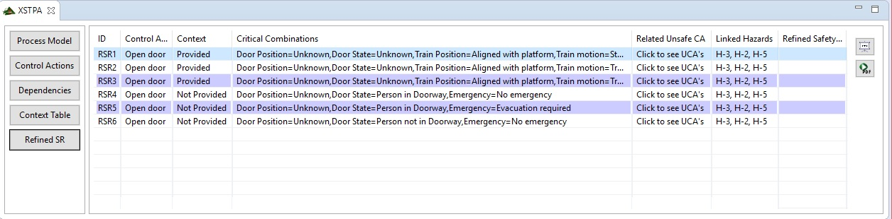

This View will show any entry which is marked as "Hazardous" in any context. You can link any unsafe control actions with these entrys, by clicking into the cell. This will open a small Dialog with all available "Unsafe Control Actions". Then you can link them, similar to the dependencies view. You can also give every entry a description by clicking into the cell. You will find two Buttons on the side of the Table. The first one creates the "LTL Table", which is currently only used for export, but it will be enhanced in the future. The second Button opens the Export Dialog which is the same as in XSTAMPP.
